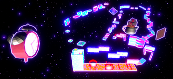
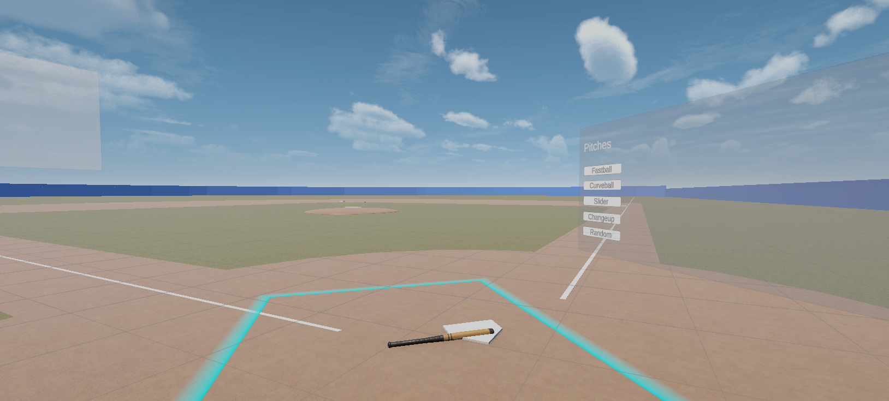

This is a game that me and my group made for a group project at school. The game is a first person parkour game, with the focus on the movement and building up momentum.
Features in the game I worked on:
Advanced player movement, such as wallrunning and dashing
Sound design and music
Story:
you are a painter called Mr Sanders. You lost your passion for art. That's why you decide to go to therapy. During the therapy you will dive deeper in your past and find out what it is that caused the your of your passion.
Will you embrace the change and find your passion for paint again?

VR Baseball Hitter
This is a VR baseball hitting game I developed. Step up to the plate and test your batting skills in a virtual reality environment!
Features I worked on:
- Realistic bat swing mechanics using VR controllers
- Dynamic pitching system
- Score tracking and feedback
- Immersive realistic feel
Story:
You play as an up-and-coming baseball player aiming to impress scouts and make it to the big leagues. Practice your swings, improve your timing, and see how many home runs you can hit!

Slice & Survive
This is a game I made for my design and programming classes. It's it also a first person parkour game. you are a pizza deliverer that needs to deliver pizza in a post apocalyptic city. And be careful of the zombies that lurk the city.
Features I worked on in the game:
parkour movement, such as wallrunning
zombie enemies that you need to watch out for
an engaging fun story
story:
It's been a few years since the zombie apocalyspe. The streets are still lurking full of zombies.
You the player called Josh are a pizza deliverer. It's not the best job but it pays the bills.
It's your first day as a pizza deliverer. Will you be able to avoid the zombies and deliver the pizza?